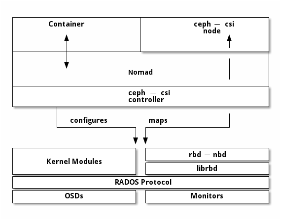

Notice
This document is for a development version of Ceph.
Block Devices and Nomad
Like Kubernetes, Nomad can use Ceph Block Device. This is made possible by ceph-csi, which allows you to dynamically provision RBD images or import existing RBD images.
Every version of Nomad is compatible with ceph-csi, but the reference version of Nomad that was used to generate the procedures and guidance in this document is Nomad v1.1.2, the latest version available at the time of the writing of the document.
To use Ceph Block Devices with Nomad, you must install
and configure ceph-csi within your Nomad environment. The following
diagram shows the Nomad/Ceph technology stack.

Note
Nomad has many possible task drivers, but this example uses only a Docker container.
Important
ceph-csi uses the RBD kernel modules by default, which may not support
all Ceph CRUSH tunables or RBD image features.
Create a Pool
By default, Ceph block devices use the rbd pool. Ensure that your Ceph
cluster is running, then create a pool for Nomad persistent storage:
ceph osd pool create nomad
See Create a Pool for details on specifying the number of placement groups for your pools. See Placement Groups for details on the number of placement groups you should set for your pools.
A newly created pool must be initialized prior to use. Use the rbd tool
to initialize the pool:
rbd pool init nomad
Configure ceph-csi
Ceph Client Authentication Setup
Create a new user for Nomad and ceph-csi. Execute the following command and record the generated key:
$ ceph auth get-or-create client.nomad mon 'profile rbd' osd 'profile rbd pool=nomad' mgr 'profile rbd pool=nomad'
[client.nomad]
key = AQAlh9Rgg2vrDxAARy25T7KHabs6iskSHpAEAQ==
Configure Nomad
Configuring Nomad to Allow Containers to Use Privileged Mode
By default, Nomad doesn’t allow containers to use privileged mode. We must configure Nomad so that it allows containers to use privileged mode. Edit the Nomad configuration file by adding the following configuration block to /etc/nomad.d/nomad.hcl:
plugin "docker" {
config {
allow_privileged = true
}
}
Loading the rbd module
Nomad must have the rbd module loaded. Run the following command to confirm that the rbd module is loaded:
$ lsmod | grep rbd
rbd 94208 2
libceph 364544 1 rbd
If the rbd module is not loaded, load it:
sudo modprobe rbd
Restarting Nomad
Restart Nomad:
sudo systemctl restart nomad
Create ceph-csi controller and plugin nodes
The ceph-csi plugin requires two components:
Controller plugin: communicates with the provider’s API.
Node plugin: executes tasks on the client.
Note
We’ll set the ceph-csi’s version in those files. See ceph-csi release for information about ceph-csi’s compatibility with other versions.
Configure controller plugin
The controller plugin requires the Ceph monitor addresses of the Ceph cluster. Collect both (1) the Ceph cluster unique fsid and (2) the monitor addresses:
$ ceph mon dump
<...>
fsid b9127830-b0cc-4e34-aa47-9d1a2e9949a8
<...>
0: [v2:192.168.1.1:3300/0,v1:192.168.1.1:6789/0] mon.a
1: [v2:192.168.1.2:3300/0,v1:192.168.1.2:6789/0] mon.b
2: [v2:192.168.1.3:3300/0,v1:192.168.1.3:6789/0] mon.c
Generate a ceph-csi-plugin-controller.nomad file similar to the example
below. Substitute the fsid for “clusterID”, and the monitor addresses for
“monitors”:
job "ceph-csi-plugin-controller" {
datacenters = ["dc1"]
group "controller" {
network {
port "metrics" {}
}
task "ceph-controller" {
template {
data = <<EOF
[{
"clusterID": "b9127830-b0cc-4e34-aa47-9d1a2e9949a8",
"monitors": [
"192.168.1.1",
"192.168.1.2",
"192.168.1.3"
]
}]
EOF
destination = "local/config.json"
change_mode = "restart"
}
driver = "docker"
config {
image = "quay.io/cephcsi/cephcsi:v3.3.1"
volumes = [
"./local/config.json:/etc/ceph-csi-config/config.json"
]
mounts = [
{
type = "tmpfs"
target = "/tmp/csi/keys"
readonly = false
tmpfs_options = {
size = 1000000 # size in bytes
}
}
]
args = [
"--type=rbd",
"--controllerserver=true",
"--drivername=rbd.csi.ceph.com",
"--endpoint=unix://csi/csi.sock",
"--nodeid=${node.unique.name}",
"--instanceid=${node.unique.name}-controller",
"--pidlimit=-1",
"--logtostderr=true",
"--v=5",
"--metricsport=$${NOMAD_PORT_metrics}"
]
}
resources {
cpu = 500
memory = 256
}
service {
name = "ceph-csi-controller"
port = "metrics"
tags = [ "prometheus" ]
}
csi_plugin {
id = "ceph-csi"
type = "controller"
mount_dir = "/csi"
}
}
}
}
Configure plugin node
Generate a ceph-csi-plugin-nodes.nomad file similar to the example below.
Substitute the fsid for “clusterID” and the monitor addresses for
“monitors”:
job "ceph-csi-plugin-nodes" {
datacenters = ["dc1"]
type = "system"
group "nodes" {
network {
port "metrics" {}
}
task "ceph-node" {
driver = "docker"
template {
data = <<EOF
[{
"clusterID": "b9127830-b0cc-4e34-aa47-9d1a2e9949a8",
"monitors": [
"192.168.1.1",
"192.168.1.2",
"192.168.1.3"
]
}]
EOF
destination = "local/config.json"
change_mode = "restart"
}
config {
image = "quay.io/cephcsi/cephcsi:v3.3.1"
volumes = [
"./local/config.json:/etc/ceph-csi-config/config.json"
]
mounts = [
{
type = "tmpfs"
target = "/tmp/csi/keys"
readonly = false
tmpfs_options = {
size = 1000000 # size in bytes
}
}
]
args = [
"--type=rbd",
"--drivername=rbd.csi.ceph.com",
"--nodeserver=true",
"--endpoint=unix://csi/csi.sock",
"--nodeid=${node.unique.name}",
"--instanceid=${node.unique.name}-nodes",
"--pidlimit=-1",
"--logtostderr=true",
"--v=5",
"--metricsport=$${NOMAD_PORT_metrics}"
]
privileged = true
}
resources {
cpu = 500
memory = 256
}
service {
name = "ceph-csi-nodes"
port = "metrics"
tags = [ "prometheus" ]
}
csi_plugin {
id = "ceph-csi"
type = "node"
mount_dir = "/csi"
}
}
}
}
Start plugin controller and node
To start the plugin controller and the Nomad node, run the following commands:
nomad job run ceph-csi-plugin-controller.nomad
nomad job run ceph-csi-plugin-nodes.nomad
The ceph-csi image will be downloaded.
Check the plugin status after a few minutes:
$ nomad plugin status ceph-csi
ID = ceph-csi
Provider = rbd.csi.ceph.com
Version = 3.3.1
Controllers Healthy = 1
Controllers Expected = 1
Nodes Healthy = 1
Nodes Expected = 1
Allocations
ID Node ID Task Group Version Desired Status Created Modified
23b4db0c a61ef171 nodes 4 run running 3h26m ago 3h25m ago
fee74115 a61ef171 controller 6 run running 3h26m ago 3h25m ago
Using Ceph Block Devices
Create rbd image
ceph-csi requires the cephx credentials for communicating with the Ceph
cluster. Generate a ceph-volume.hcl file similar to the example below,
using the newly created nomad user id and cephx key:
id = "ceph-mysql"
name = "ceph-mysql"
type = "csi"
plugin_id = "ceph-csi"
capacity_max = "200G"
capacity_min = "100G"
capability {
access_mode = "single-node-writer"
attachment_mode = "file-system"
}
secrets {
userID = "admin"
userKey = "AQAlh9Rgg2vrDxAARy25T7KHabs6iskSHpAEAQ=="
}
parameters {
clusterID = "b9127830-b0cc-4e34-aa47-9d1a2e9949a8"
pool = "nomad"
imageFeatures = "layering"
}
After the ceph-volume.hcl file has been generated, create the volume:
nomad volume create ceph-volume.hcl
Use rbd image with a container
As an exercise in using an rbd image with a container, modify the Hashicorp nomad stateful example.
Generate a mysql.nomad file similar to the example below:
job "mysql-server" {
datacenters = ["dc1"]
type = "service"
group "mysql-server" {
count = 1
volume "ceph-mysql" {
type = "csi"
attachment_mode = "file-system"
access_mode = "single-node-writer"
read_only = false
source = "ceph-mysql"
}
network {
port "db" {
static = 3306
}
}
restart {
attempts = 10
interval = "5m"
delay = "25s"
mode = "delay"
}
task "mysql-server" {
driver = "docker"
volume_mount {
volume = "ceph-mysql"
destination = "/srv"
read_only = false
}
env {
MYSQL_ROOT_PASSWORD = "password"
}
config {
image = "hashicorp/mysql-portworx-demo:latest"
args = ["--datadir", "/srv/mysql"]
ports = ["db"]
}
resources {
cpu = 500
memory = 1024
}
service {
name = "mysql-server"
port = "db"
check {
type = "tcp"
interval = "10s"
timeout = "2s"
}
}
}
}
}
Start the job:
nomad job run mysql.nomad
Check the status of the job:
$ nomad job status mysql-server
...
Status = running
...
Allocations
ID Node ID Task Group Version Desired Status Created Modified
38070da7 9ad01c63 mysql-server 0 run running 6s ago 3s ago
To check that data are persistent, modify the database, purge the job, then create it using the same file. The same RBD image will be used (re-used, really).
Brought to you by the Ceph Foundation
The Ceph Documentation is a community resource funded and hosted by the non-profit Ceph Foundation. If you would like to support this and our other efforts, please consider joining now.